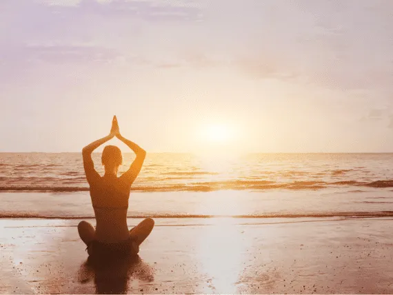

Mindfulness Tips for a Calmer, Balanced Life

We believe in the importance of nurturing not just the body, but also the mind. Mindfulness is avaluable tool that can help in maintaining
emotional and psychological well-being, and today we’d like to share some tips to incorporate mindfulness into your daily life.
Start Small with Breathing Exercises
Mindfulness doesn’t require complicated techniques or hours of meditation. A simple place to begin is with your breath. Focusing on
deep, intentional breathing can instantly ground you and bring you back to the present moment. Try taking fifteen minutes each day
to sit quietly, inhale deeply through your nose, hold for a few seconds, and exhale slowly through your mouth. This small exercise
can help lower stress levels, improve concentration, and promote a sense of calm.
Incorporate Mindfulness into Daily Tasks
Mindfulness isn’t just for meditation; it can be applied to everyday tasks. Whether you’re washing the dishes, taking a walk, or
even brushing your teeth, try to focus on the sensations and actions involved. Engage your senses, how does the water feel on your
hands, what sounds do you hear around you, how does the ground feel under your feet? By doing this, you bring yourself fully into
the present, which can help reduce feelings of stress and overwhelm.
Embrace Guided Meditation
If you’re new to mindfulness, guided meditations can be a great way to start. These sessions, available in various apps or online,
provide direction and focus, making it easier to stay present. Guided meditations often include relaxation techniques and visualisation
exercises, perfect for those struggling to quiet the mind. Over time, regular practice can lead to improved emotional regulation and
better stress management, something we often recommend to our patients at Healify Clinic as part of their mental and
emotional well-being plan.
Let Go of Judgment
A core principle of mindfulness is letting go of judgement, both towards yourself and others. Often, our minds are filled with
self-criticism and worry. Mindfulness encourages you to observe your thoughts and feelings without judging them. When a negative
thought arises, acknowledge it, but don’t dwell on it. This practice allows you to build emotional resilience, enhancing your overall
emotional wellness.
Create a Mindfulness Routine
Making mindfulness a regular part of your day doesn’t need to be time-consuming. Establish a mindful routine that fits into your lifestyle.
It could be as simple as taking a few moments each morning to set your intentions for the day or practising a quick meditation before bed.
Small, consistent practices add up and can have a significant impact on your overall well-being.
We understand the connection between mental, emotional, and physical health. By incorporating mindfulness into your daily routine, you’r
taking an important step towards maintaining balance in all aspects of your life. Remember, mindfulness is not about perfection; it’s
about being present and finding peace in the here and now.